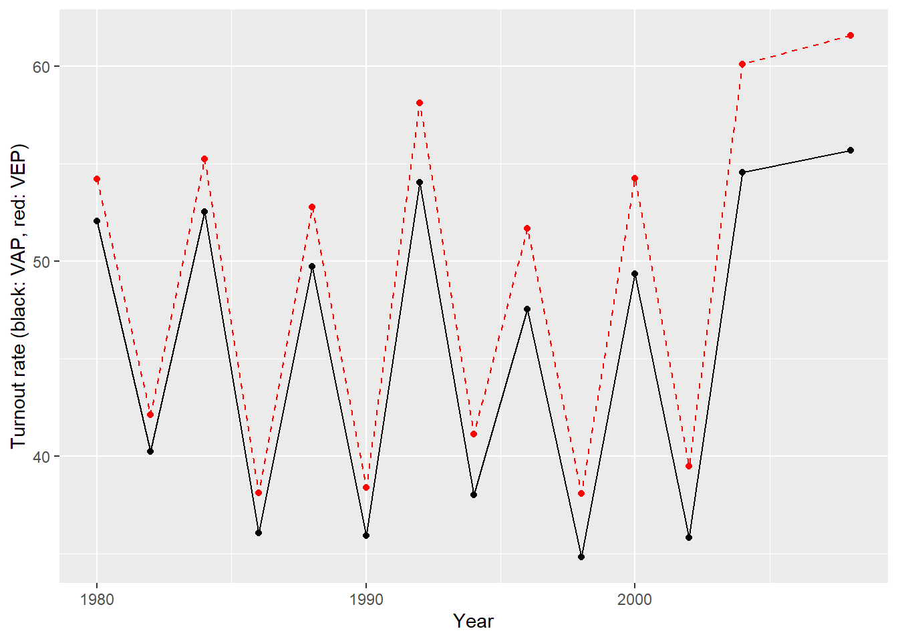

| Variable | Description |
|---|---|
| year | election year |
| ANES | ANES estimated turnout rate |
| VEP | voting eligible population (in thousands) |
| VAP | voting age population (in thousands) |
| total | total ballots cast for highest office (in thousands) |
| felons | total ineligible felons (in thousands) |
| noncitizens | total noncitizens (in thousands) |
| overseas | total eligible overseas voters (in thousands) |
| osvoters | total ballots counted by overseas voters (in thousands) |
Checkpoint: Data
Key question
Can we trust self-reported voting turnout?
Consider the data stored in the file turnout.csv. These represent measurements on US election turnout data and will be used to investigate whether there is a bias in self-reported voting turnout. In a nutshell, people are becoming more concerned about accuracy of answers to post-election surveys as people might lie about about whether or not they voted due to social desirability bias. Perhaps the respondent felt like they should have voted when in fact they didn’t vote. You will investigate whether this sort of bias is present in the survey conducted by the American National Election Studies (ANES).
How do we measure turnout rates? The numerator should be the total votes that were cast, while we have two choices for the denominator:
- Registered voters
- VAP (voting-age population) from Census
- VEP (voting-eligible population)
Both VAP and VEP do not count overseas voters, so if those data are available we may want to use it. Furthermore, we have that
\[ \text{VEP = VAP + overseas voters} - \text{ineligible voters} \]
where:
- overseas voters: military personnel and civilians
- ineligible voters: non-citizens, disenfranchised felons, those who failed to meet states’ residency requirement, etc.
Q1
Read the data into R.
How many variables and observations are there?
What’s the range of years covered by this survey?
# A tibble: 6 × 9
year VEP VAP total ANES felons noncit overseas osvoters
<dbl> <dbl> <dbl> <dbl> <dbl> <dbl> <dbl> <dbl> <dbl>
1 1980 159635 164445 86515 71 802 5756 1803 NA
2 1982 160467 166028 67616 60 960 6641 1982 NA
3 1984 167702 173995 92653 74 1165 7482 2361 NA
4 1986 170396 177922 64991 53 1367 8362 2216 NA
5 1988 173579 181955 91595 70 1594 9280 2257 NA
6 1990 176629 186159 67859 47 1901 10239 2659 NAdim(turnout)[1] 14 9range(turnout$year)[1] 1980 2008The file stores measurements on 9 variables for 14 years. The range of years covered by the ANES survey is 1980 to 2008.
Q2
Adjust the voting age population (VAP) to also include overseas voters.
Using the adjusted VAP, calculate the turnout rate. Finally, calculate the turnout rate using the voting eligible population (VEP) as the denominator. What differences do you observe?
turnout$ANES [1] 71 60 74 53 70 47 75 56 73 52 73 62 77 78The ANES estimated turnout rate is out of 100, so we will express rates as percentages instead of proportions.
turnout$VAPtr <- turnout$total / (turnout$VAP + turnout$overseas) * 100
turnout$VEPtr <- turnout$total / turnout$VEP * 100turnout$VEPtr - turnout$VAPtr [1] 2.155785 1.891789 2.711115 2.062703 3.045878 2.480105 4.072866 3.095397
[9] 4.124166 3.261470 4.882388 3.682145 5.553078 5.880239ggplot(turnout) +
geom_line(aes(year, VAPtr)) +
geom_point(aes(year, VAPtr)) +
geom_line(aes(year, VEPtr), color = 'red', linetype = 2) +
geom_point(aes(year, VEPtr), color = 'red', linetype = 2) +
labs(x = 'Year', y = 'Turnout rate (black: VAP, red: VEP)')
It appears that the estimated turnout rate based on the VAP is always lower than the estimate using the VEP.
Q3
Calculate the bias between the ANES estimate of the turnout rate and the estimate using the adjusted VAP.
How big is the bias on average?
What’s the range of the bias?
turnout$diffVAP <- turnout$ANES - turnout$VAPtr
summary(turnout$diffVAP) Min. 1st Qu. Median Mean 3rd Qu. Max.
11.06 18.22 20.62 20.33 22.42 26.17 turnout$diffVEP <- turnout$ANES - turnout$VEPtr
summary(turnout$diffVEP) Min. 1st Qu. Median Mean 3rd Qu. Max.
8.581 15.267 16.893 16.836 18.529 22.489 The average bias between the VAP and the ANES estimate of the turnout rate is 20.33 with a min of 11.06 and 26.17
The corresponding values for the turnout rate estimate based on the VEP is 16.84, with a range 8.58, 22.49.
The %in% function.
What if we want to check whether each value in a vector is found in another collection of values?
x <- 1:10
x [1] 1 2 3 4 5 6 7 8 9 10collection <- c(4, 8)
collection[1] 4 8x %in% collection [1] FALSE FALSE FALSE TRUE FALSE FALSE FALSE TRUE FALSE FALSEAs you can see from the output above, %in% checks whether each value appears among the collection. If it does, it returns TRUE and, if it doesn’t, FALSE.
You can also use the logical TRUE/FALSE values for logical indexing.
x[x %in% collection][1] 4 8Filtering rows in a dataset
Let’s create a data table df with two columns: X, containing the letters “a” and “b” each repeated 5 times, and Y containing the whole numbers from 1 to 10:
# A tibble: 20 × 2
X Y
<chr> <int>
1 a 1
2 a 2
3 a 3
4 a 4
5 a 5
6 b 6
7 b 7
8 b 8
9 b 9
10 b 10
11 c 11
12 c 12
13 c 13
14 c 14
15 c 15
16 d 16
17 d 17
18 d 18
19 d 19
20 d 20Let’s keep the rows where X is either b or d
# A tibble: 10 × 2
X Y
<chr> <int>
1 b 6
2 b 7
3 b 8
4 b 9
5 b 10
6 d 16
7 d 17
8 d 18
9 d 19
10 d 20or, to avoid always writing the data name we can use the function filter from the library tidyverse, which automatically looks for the column X inside the data df:
# A tibble: 10 × 2
X Y
<chr> <int>
1 b 6
2 b 7
3 b 8
4 b 9
5 b 10
6 d 16
7 d 17
8 d 18
9 d 19
10 d 20or
# A tibble: 10 × 2
X Y
<chr> <int>
1 b 6
2 b 7
3 b 8
4 b 9
5 b 10
6 d 16
7 d 17
8 d 18
9 d 19
10 d 20Q4
Presidential elections occur every 4 years. Split the data into two, one for presidential and one for midterm elections.
Does the bias of the ANES estimates vary across election types?
turnout$year [1] 1980 1982 1984 1986 1988 1990 1992 1994 1996 1998 2000 2002 2004 2008yrs_presid <- seq(1980, 2008, by = 4)
yrs_presid[1] 1980 1984 1988 1992 1996 2000 2004 2008turnout$year %in% yrs_presid [1] TRUE FALSE TRUE FALSE TRUE FALSE TRUE FALSE TRUE FALSE TRUE FALSE
[13] TRUE TRUE# A tibble: 8 × 13
year VEP VAP total ANES felons noncit overseas osvoters VAPtr VEPtr
<dbl> <dbl> <dbl> <dbl> <dbl> <dbl> <dbl> <dbl> <dbl> <dbl> <dbl>
1 1980 159635 164445 86515 71 802 5756 1803 NA 52.0 54.2
2 1984 167702 173995 92653 74 1165 7482 2361 NA 52.5 55.2
3 1988 173579 181955 91595 70 1594 9280 2257 NA 49.7 52.8
4 1992 179656 190778 104405 75 2183 11447 2418 NA 54.0 58.1
5 1996 186347 200016 96263 73 2586 13601 2499 NA 47.5 51.7
6 2000 194331 210623 105375 73 3083 16218 2937 NA 49.3 54.2
7 2004 203483 220336 122295 77 3158 18068 3862 NA 54.5 60.1
8 2008 213314 230872 131304 78 3145 19392 4972 263 55.7 61.6
# ℹ 2 more variables: diffVAP <dbl>, diffVEP <dbl># A tibble: 6 × 13
year VEP VAP total ANES felons noncit overseas osvoters VAPtr VEPtr
<dbl> <dbl> <dbl> <dbl> <dbl> <dbl> <dbl> <dbl> <dbl> <dbl> <dbl>
1 1982 160467 166028 67616 60 960 6641 1982 NA 40.2 42.1
2 1986 170396 177922 64991 53 1367 8362 2216 NA 36.1 38.1
3 1990 176629 186159 67859 47 1901 10239 2659 NA 35.9 38.4
4 1994 182623 195258 75106 56 2441 12497 2229 NA 38.0 41.1
5 1998 190420 205313 72537 52 2920 14988 2937 NA 34.8 38.1
6 2002 198382 215462 78382 62 3168 17237 3308 NA 35.8 39.5
# ℹ 2 more variables: diffVAP <dbl>, diffVEP <dbl>Using the VEP turnout rate:
Using the VAP turnout rate:
Using both the VEP or VAP estimates of the turnout rate, it seems that the bias is higher in the presidential elections than the midterm elections.
Q5
Divide the data into half by election years such that you subset the data into two periods.
Calculate the difference between the ANES turnout rate and the VEP turnout rate separately for each year within each period.
Has the bias of ANES increased over time?
turnout# A tibble: 14 × 13
year VEP VAP total ANES felons noncit overseas osvoters VAPtr VEPtr
<dbl> <dbl> <dbl> <dbl> <dbl> <dbl> <dbl> <dbl> <dbl> <dbl> <dbl>
1 1980 159635 164445 86515 71 802 5756 1803 NA 52.0 54.2
2 1982 160467 166028 67616 60 960 6641 1982 NA 40.2 42.1
3 1984 167702 173995 92653 74 1165 7482 2361 NA 52.5 55.2
4 1986 170396 177922 64991 53 1367 8362 2216 NA 36.1 38.1
5 1988 173579 181955 91595 70 1594 9280 2257 NA 49.7 52.8
6 1990 176629 186159 67859 47 1901 10239 2659 NA 35.9 38.4
7 1992 179656 190778 104405 75 2183 11447 2418 NA 54.0 58.1
8 1994 182623 195258 75106 56 2441 12497 2229 NA 38.0 41.1
9 1996 186347 200016 96263 73 2586 13601 2499 NA 47.5 51.7
10 1998 190420 205313 72537 52 2920 14988 2937 NA 34.8 38.1
11 2000 194331 210623 105375 73 3083 16218 2937 NA 49.3 54.2
12 2002 198382 215462 78382 62 3168 17237 3308 NA 35.8 39.5
13 2004 203483 220336 122295 77 3158 18068 3862 NA 54.5 60.1
14 2008 213314 230872 131304 78 3145 19392 4972 263 55.7 61.6
# ℹ 2 more variables: diffVAP <dbl>, diffVEP <dbl>first_period <- turnout[1:7, ]
second_period <- turnout[8:14, ]
mean(first_period$ANES) - mean(first_period$VEPtr)[1] 15.85378[1] 17.81891Yes, it appears that in the second half of the data the bias was slightly higher.